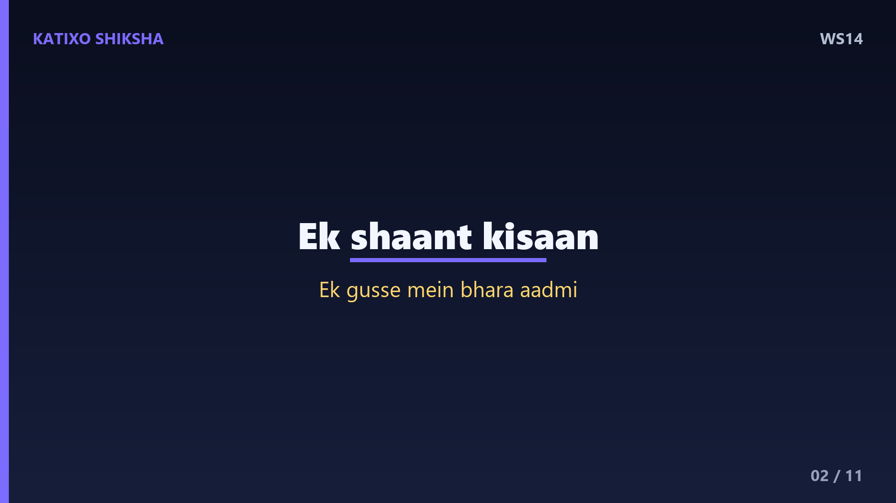
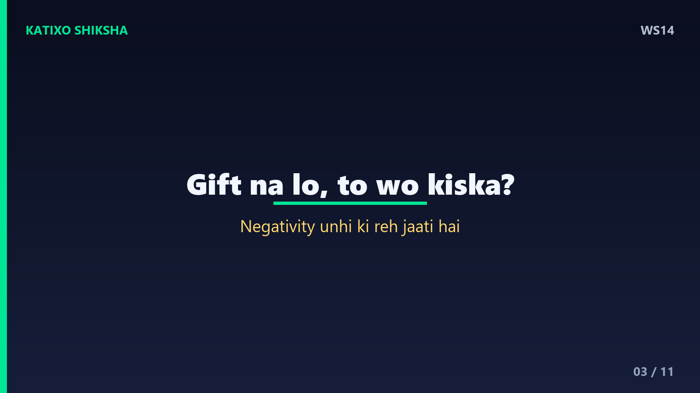
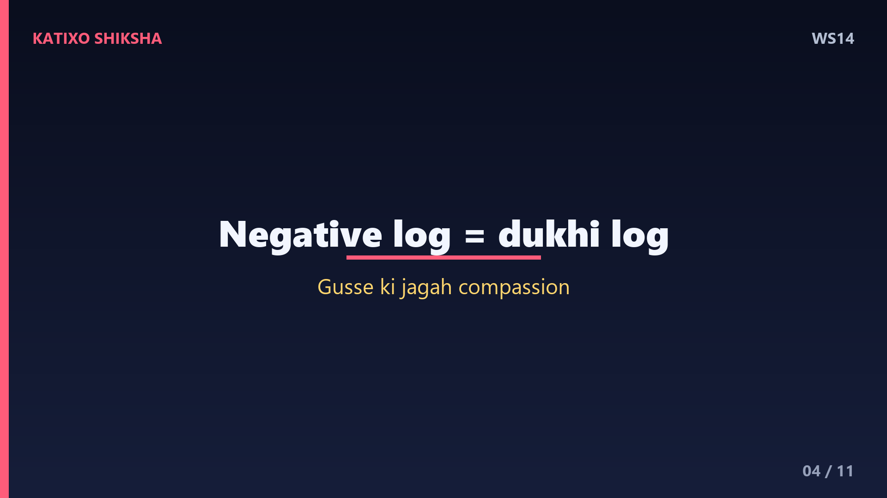
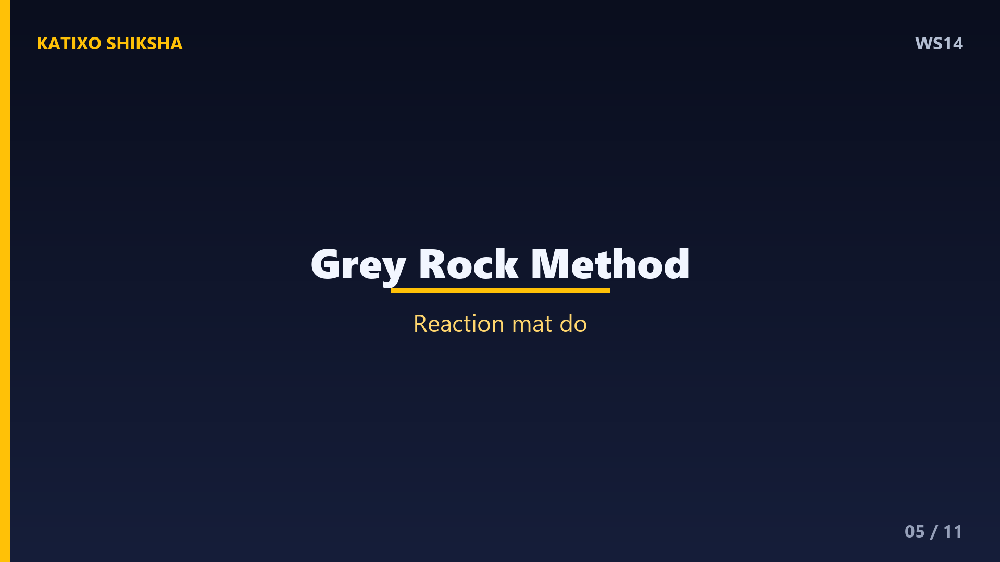
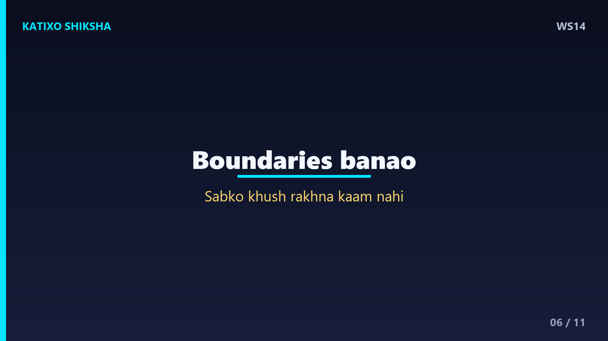
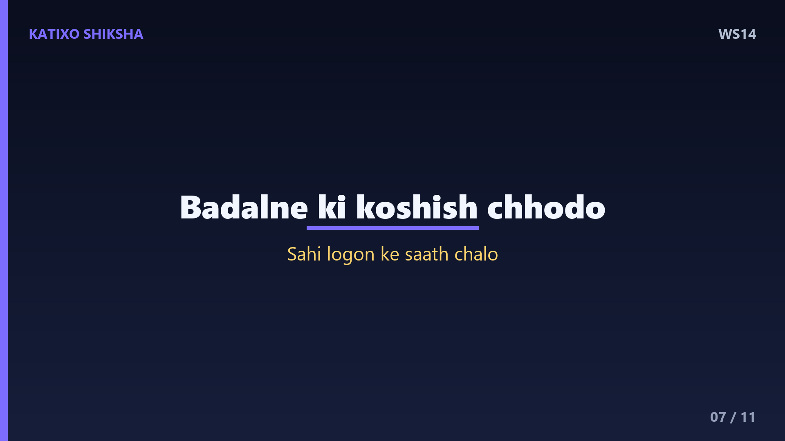
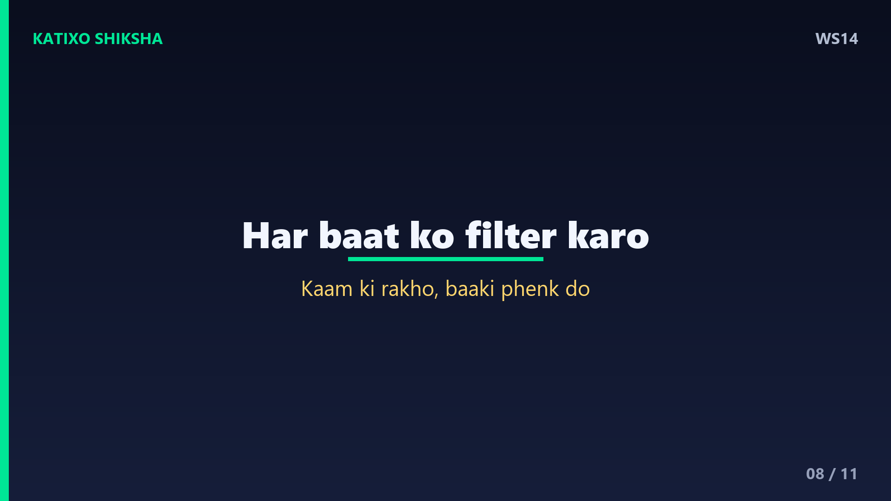
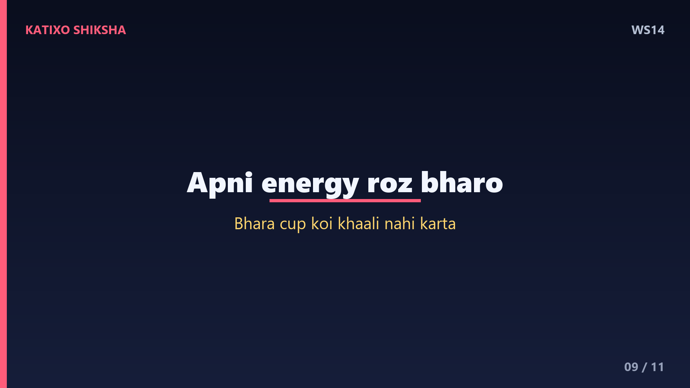
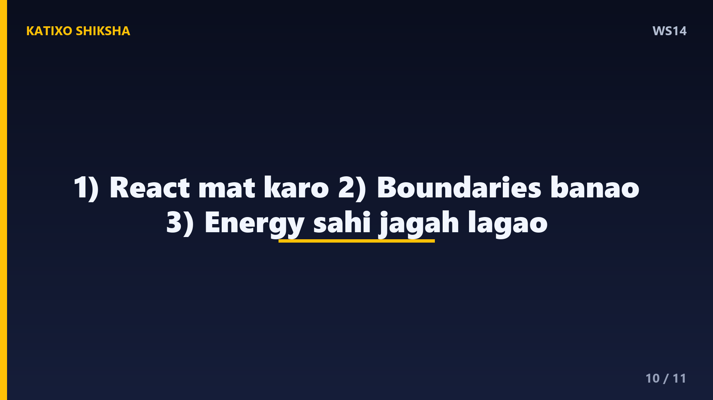
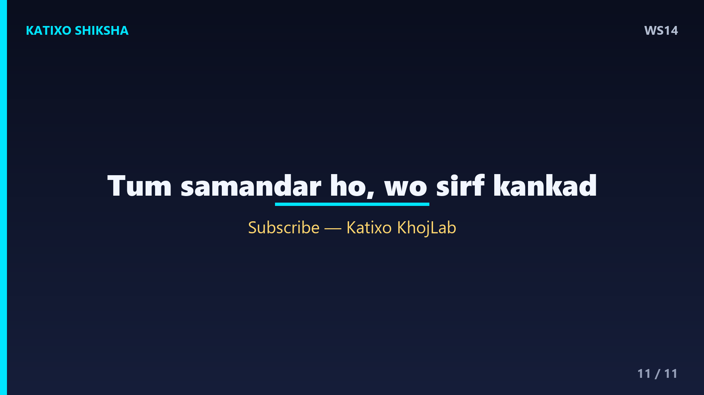

WS14 — Negative Logon Se Kaise Deal Karein?
Slide 1दोस्तों, क्या तुम्हारे साथ भी ऐसा होता है — तुम किसी काम में excited रहते हो, और कोई आकर कह देता है, ये तुमसे नहीं होगा? या वो लोग जो हमेशा complain करते हैं, हर बात में negative देखते हैं, और तुम्हारी energy चूस लेते हैं? ऐसे लोगों के साथ रहना थका देता है। आज Katixo KhojLab की इस कहानी में हम सीखेंगे — negative logon से कैसे deal करें, बिना खुद negative बने। चलो शुरू करते हैं एक छोटी सी कहानी से।

Slide 2एक गाँव में एक किसान रहता था, बहुत शांत स्वभाव का। एक दिन एक आदमी उसके पास आया और बिना वजह उसे भला-बुरा कहने लगा, गालियाँ देने लगा। किसान चुपचाप सुनता रहा, मुस्कुराता रहा। जब वो आदमी थक गया, तो किसान ने पूछा — भाई, अगर तुम किसी को कोई चीज़ gift दो, और वो उसे ना ले, तो वो चीज़ किसकी रहेगी? आदमी बोला — ज़ाहिर है, मेरी ही रहेगी। किसान मुस्कुराया।

Slide 3किसान बोला — बिल्कुल सही। आज तुम मुझे जो गुस्सा और गालियाँ gift कर रहे हो, मैं उन्हें ले ही नहीं रहा। तो ये सब किसके पास रहेगा? तुम्हारे ही पास। वो आदमी एकदम चुप हो गया। दोस्तों, यही पहली और सबसे बड़ी lesson है — किसी की negativity तभी तुम्हारी बनती है, जब तुम उसे accept करते हो। अगर तुम react ना करो, तो उनकी negativity उन्हीं के पास लौट जाती है। तुम्हें छूती भी नहीं।

Slide 4Lesson नंबर दो — समझो कि negative लोग असल में दुखी लोग होते हैं। जो इंसान अंदर से खुश और संतुष्ट है, वो दूसरों को नीचा नहीं दिखाता। जो हमेशा criticism करता है, complain करता है, वो अपने अंदर के दर्द को बाहर फेंक रहा होता है। ये समझ तुम्हें एक superpower देती है — गुस्से की जगह compassion. जब कोई तुम पर भड़के, तो सोचो — ये इंसान अंदर से कितना परेशान होगा। ये सोच तुम्हें शांत रखेगी।

Slide 5अब एक practical technique — इसे कहते हैं grey rock method. जब कोई इंसान बार-बार तुम्हें provoke करे, drama खड़ा करे, तो उसके सामने एक boring पत्थर बन जाओ। ना ज़्यादा react करो, ना emotional drama में पड़ो। छोटे, शांत जवाब दो — हाँ, ठीक है, देखते हैं। Negative लोग reaction का खाना खाते हैं। जब उन्हें reaction नहीं मिलता, तो वो अपने आप थक जाते हैं और तुम्हें छोड़ देते हैं। Silence भी एक जवाब है।

Slide 6Technique नंबर दो — boundaries बनाओ। याद रखो, सबको खुश रखना तुम्हारी ज़िम्मेदारी नहीं है। अगर कोई इंसान बार-बार तुम्हारी energy गिराता है, तो उससे थोड़ी दूरी बना लेना selfish नहीं, समझदारी है। तुम विनम्रता से ना कह सकते हो। तुम बातचीत छोटी कर सकते हो। तुम अपना time और दिल किसके साथ share करोगे — ये तुम्हारा हक़ है। अपने मन की शांति की रक्षा करना तुम्हारा फ़र्ज़ है, गुनाह नहीं।

Slide 7एक ज़रूरी बात — negative लोगों को बदलने की कोशिश में अपनी ज़िंदगी मत लगाओ। हम अक्सर सोचते हैं, मैं समझाऊँगा तो वो बदल जाएँगे। पर सच ये है — कोई तभी बदलता है जब वो खुद बदलना चाहे। तुम किसी को जगा सकते हो, पर सोने का नाटक करने वाले को नहीं। अपनी energy उन लोगों में लगाओ जो तुम्हें ऊपर उठाते हैं। ज़िंदगी छोटी है — इसे सही लोगों के साथ बिताओ।

Slide 8एक और powerful trick — हर negative बात को एक filter से गुज़ारो। खुद से पूछो — क्या इस बात में कोई सच्चाई है जो मेरे काम आ सकती है? अगर हाँ, तो उससे सीख लो और आगे बढ़ो। अगर नहीं, अगर ये बस ज़हर है, तो उसे वहीं छोड़ दो। हर criticism दुश्मन नहीं होती, और हर तारीफ़ दोस्त नहीं। समझदार इंसान वो है जो काम की बात रख ले और बेकार की बात फेंक दे। ये filter तुम्हें मज़बूत बनाएगा।

Slide 9और सबसे आख़िरी, सबसे ज़रूरी बात — खुद की energy को रोज़ भरो। जैसे फ़ोन को charge करना पड़ता है, वैसे ही अपने मन को भी। अच्छी किताबें पढ़ो, अच्छे लोगों से मिलो, थोड़ी देर शांत बैठो, कुदरत के साथ time बिताओ। जब तुम्हारा अपना cup भरा होगा, तो कोई एक negative इंसान उसे ख़ाली नहीं कर पाएगा। मज़बूत जड़ें हों, तो आँधियाँ डरा नहीं सकतीं। अपनी जड़ों को रोज़ पानी दो।

Slide 10चलो आज की तीन सबसे बड़ी सीख याद कर लें। पहली — किसी की negativity तभी तुम्हारी बनती है जब तुम उसे accept करो, तो react मत करो। दूसरी — boundaries बनाओ, सबको खुश रखना तुम्हारा काम नहीं। और तीसरी — negative लोगों को बदलने में नहीं, अपनी energy सही लोगों और अपने आप में लगाओ। ये तीन चीज़ें तुम्हारे मन की शांति की चाबी हैं।

Slide 11याद रखना दोस्तों — तुम एक समंदर हो, और negative लोग बस कंकड़। एक कंकड़ समंदर को गंदा नहीं कर सकता। तुम्हारी शांति तुम्हारी ताक़त है, और ये किसी के हाथ में नहीं, सिर्फ़ तुम्हारे हाथ में है। आज से तय करो — दूसरों के मूड को अपनी ज़िंदगी का steering wheel मत बनने दो। अगर ये कहानी पसंद आई, तो like, share, और Katixo KhojLab को subscribe करना मत भूलना। मिलते हैं अगली कहानी में!